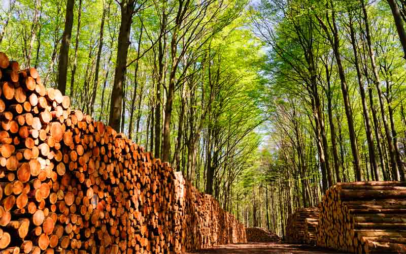

Esto te puede interesar.

1Biomasa forestal.
La biomasa es la cantidad de carbono almacenado en el bosque. Es importante conocer la biomasa forestal para elaborar previsiones sobre el ciclo mundial del carbono, que es un elemento de importancia en los estudios sobre el cambio climático. Además, para una parte de la población humana que vive en las zonas rurales de los países en desarrollo la biomasa es una fuente primordial de combustible para cocinar y para calefacción.
2Factores de importancia de la biomasa forestal.
La biomasa de un individuo arbóreo se define como su masa seca total, incluyendo el follaje, ramas, troncos y raíces, sin considerar la hojarasca caída y la materia orgánica en descomposición